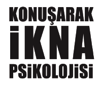

Kişisel Gelişim: 75
1. Baskı: Kasım 2012
ISBN: 978-605-384-544-7
Yayıncı Sertifika No: 16238

Yazar: Kevin Hogan
Çeviri: Pınar Bolat
Yayın Yönetmeni: Ender Haluk Derince
Görsel Yönetmen: Faruk Derince
Yayın Koordinatörü: Ceylan Şenol
Editör: Sedef İlgiç
Düzelti: Fatma Özay
İç Tasarım: Tuğçe Gülen
Baskı: Melisa Matbaacılık
Matbaa Sertifika No: 12088
Çifte Havuzlar Yolu
Acar Sitesi No: 4
Davutpaşa/İSTANBUL
YAKAMOZ KİTAP © KEVIN HOGAN
Orijinal Adı: Talk Your Way to The Top
Copyright © 2000, Kevin Hogan. Kitabın Türkçe yayım hakları Pelican Publishing Company, Inc., U.S.A. aracılığıyla alınmıştır.
Yayınevinden izin alınmaksızın tümüyle veya kısmen çoğaltılamaz, kopya edilemez ve yayımlanamaz.
YAKAMOZ KİTAP / SONSUZ KİTAP
Gürsel Mah. Alaybey Sk. No: 7/1 Kağıthane/İSTANBUL
Tel: 0212 222 72 25 Faks: 0212 222 72 35
www.yakamoz.com.tr / info@yakamoz.com.tr
www.facebook.com/yakamozkitap
www.twitter.com/yakamozkitap